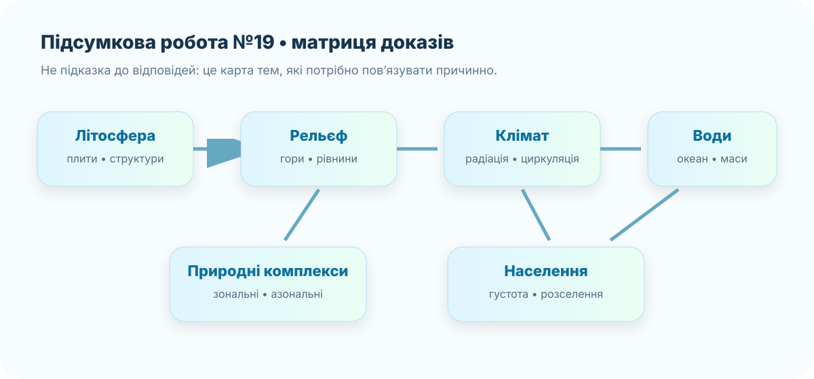

Ідентифікація учня
Робота відкриється тільки після заповнення всіх трьох полів. Після натискання «Здати роботу» відповіді фіксуються у цьому браузері, а нижче відкривається діагностичний розбір.
Офіційні дані, які можна використовувати
Це не довідник із відповідями, а джерела географічних доказів. Вони знадобляться насамперед для перевірки просторових закономірностей.
літосферні плитиNASA Earth Observatory
глобальні картиCopernicus Marine
океанічні даніWorldPop
населення

Матриця показує, які системи Землі потрібно вміти пов’язувати причинно. Стрілки не задають готових відповідей на тест.
10 завдань — 10 балів
Кожне завдання оцінюється в 1 бал. Обирайте найкращу відповідь, а не просто твердження, яке «десь зустрічалося».
Розбір і корекція
Тепер можна переглянути логіку правильних відповідей. Не переписуйте формулювання: знайдіть тип помилки — факт, причинний зв’язок, читання даних або обчислення.
1. Літосферні плити
Нова океанічна кора формується на дивергентних межах, зокрема вздовж серединно-океанічних хребтів, де відбувається спрединг.
2. Тектонічна структура і рельєф
Давні стабільні платформи зазвичай відповідають великим рівнинним областям; молоді складчасті пояси частіше пов’язані з гірським рельєфом.
3. Корисні копалини
Розміщення родовищ пов’язане з історією геологічних процесів, магматизмом, осадонакопиченням, метаморфізмом і віком структур.
4–6. Клімат
Океан пом’якшує температурні коливання; у помірних широтах переважає західний перенос; кліматограма з майже незмінно високою температурою й рясними опадами має екваторіальні риси.
7. Природні комплекси
Широтна зональність проявляється зі зміною широти, вертикальна поясність — зі зміною висоти. В обох випадках ключовими є зміни тепла й зволоження.
8. Водні маси
Холодна вода має більшу густину; збільшення солоності також підвищує густину. У високих широтах це сприяє зануренню вод і глибинній циркуляції.
9–10. Населення
24 000 000 ÷ 300 000 = 80 осіб/км². Розселення пояснюється не одним природним чинником: важливі вода, ґрунти, транспорт, історія освоєння та господарство.
Корекційний CER
Оберіть одну свою помилку або найскладніше завдання й поясніть його заново.